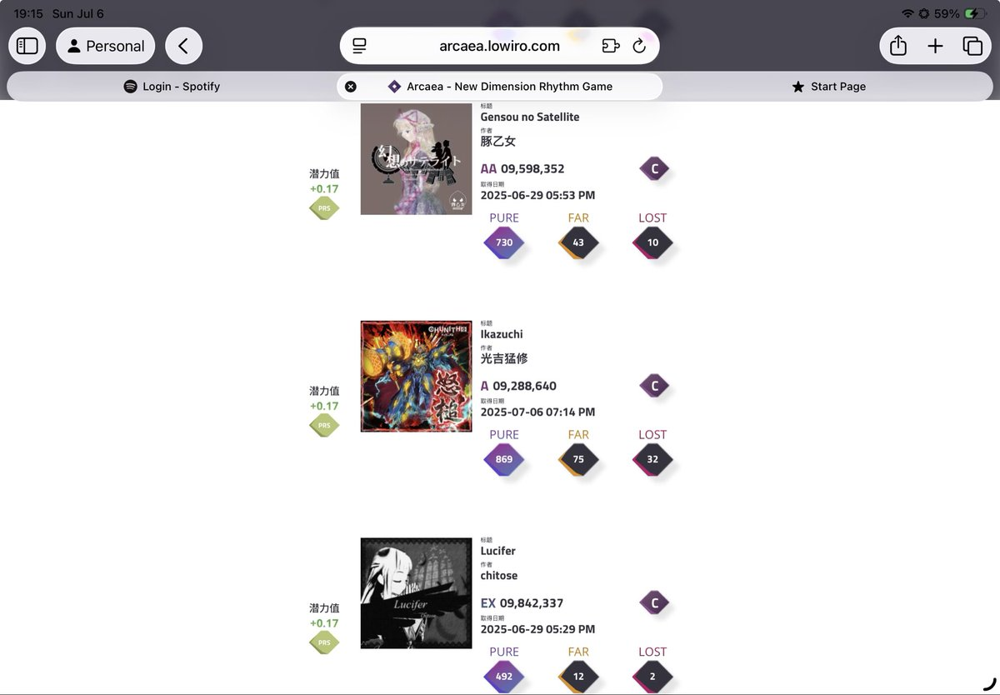

小虚空🍥
@tokerumaisurii
我初见绿怒槌都糊成这样了为啥还跑到#6去了……就因为这歌七级别的五六级？A不会比AA、EX和EX+扣掉很多PTT乘数因子吗，还是说这个游戏的rating计算机制到底是什么样的……？

小虚空🍥
@tokerumaisurii
段位挑战 Phase 1 通过 & PTT 6+
有点感慨，韵律源点一段比舞萌DX一段有压力多了）））
以及不知道是不是我对游戏的理解问题……为什么LOST十几个FAR几十个的糊爆成绩还有很高的潜力值，是评级掉到AA甚至A也并不会降很多乘数因子吗？ https://t.co/USzMQfdiLT